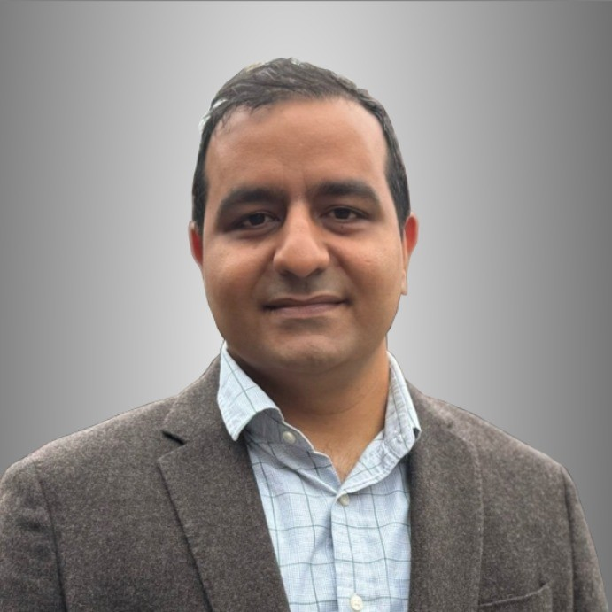

6th Open-Source Computational Mechanics and Acoustics Workshop and Summer Camp
Tentative Program
Management: Fethi Okyar
Highlights:
Shahin Eskandari, PhD (Montreal, QC):

Prof. Tahsin Khajah (Tyler, TX)
- Topic: Comparing Taylor and Pade approximations for ultrasound imagining of biological media.
- Video Call Link: https://meet.gogle.com/sxr-uuon-kiu
- Twitch Live Link:

Prof. Emek Abali (Uppsala, SK)
Workshop Calender:
Live stream: https://www.twitch.tv/oscmw_
Thursday, Aug.14:
14:00 Session 1: Essentials for Beginners
- Topics:
- (linux, console, zsh, ssh, python, emacs, git, latex, bibtex, zotero, etc.)
- accessing our github repo (mekanotrix), the two-factor authentication issue
21:30 Session 2: Invited Talk
- Speaker: Shahin Eskandari
- Topic:
- Video Call Link: https://meet.gogle.com/sxr-uuon-kiu
- Twitch Live Link:
Friday, Aug.15:
11:00 Session 3:
21:30 Session 4: Invited Talk
- Speaker: Tahsin Khajah
- Topic: Comparing Taylor and Pade approximations for ultrasound imagining of biological media.
- Video Call Link: https://meet.gogle.com/sxr-uuon-kiu
- Twitch Live Link:
Saturday, Aug.16:
11:00 Session 5:
16:00 Session 6: Invited Talk
- Speaker: Bilen Emek Abali
- Topic:
- Video Call Link: https://meet.gogle.com/sxr-uuon-kiu
- Twitch Live Link:
21:30 Session 7: Invited Talk
Sunday, Aug.17:
11:00 Session 8:
15:00 Session 9: Closing
19:00 Dinner at Lunapark
Campers:
- Asst. Prof. Mete Öğüç (Ph.D.,2023)
- Volkan Karadağ (Ph.D.,2024)
- Neşet Biçkin (ME,2025)
- Ufuk Tan Baler (M.Sc.,2023)
- Kerem Aydınlı (B.Sc.,2026)
- Eren Kabarık (B.Sc., 2027)
- Maya Çoban (B.Sc.,2028)
- İlker Alkaşi (B.Sc.,2025)
- Ozan Akyıldız (B.Sc.,2025)
- Ege Yetkin
Alumni:
- Faruk Büyükkaya (M.Sc.,2023)
Camp Instructions:
- bisiklet, çadır, çarşaf, terlik, havlu, sinek ilacı, mayo, bilgisayar
- sabahları çay ve poğaça, öğledensonra mangal.
- Gün içerisinde çay-kahve yapılır.
- Tatlı tuzlu, atıştırmalık, meşrubat, ve mangal için alkollü içeceğinizi yanınızda getiriniz.
Promo:
1st international conference on metamaterials:
16th national acoustical congress:
Almanya'da sayısal mekanik ile ilgili yüksek lisans fırsatları
Mezunumuz Nedimcan Aytemür tarafından 2023 Kasım ayında derlenmiştir.
Friedrich-Alexander-Universität Erlangen-Nürnberg/Computational Engineering:
Kabul aldığım ve başladığım okul ve bölüm. Avantajlarından bahsetmem gerekirse eğitim dili İngilizce. İngilizce yeterliliği olarak okuduğumuz lisans programının İngilizce dilinde olduğuna dair fakülteden alınan belge geçerli oluyor. Böylece hem zor hem de maddi olarak külfetli IELTS/TOEFL sınavlarına gerek olmuyor. Ayrıca program, UniAssist gibi başvuru kuruluşlarına ihtiyaç olmaksızın direkt başvuru alıyor. Program sadece kış dönemlerinde öğrenci alıyor. Kesin bir yargıda bulunmak zor ama diğer okullara nazaran kabul oranları daha yüksek sanırım.
Başka bir avantaj ise, program hesaplamalı mekanik değil, hesaplamalı mühendislik adı altında eğitim veriyor. Programda optik, malzeme, ısı/akışkan, mekanik/dinamik, mekatronik, IT, otomatik kontrol alt dallarından, seçilen branşın eğitimi veriliyor. Yani mekanik/dinamik düşünmeyen, başka branşlara ilgi duyan arkadaşlarımızın ilgisini çekebilir.
Ayrıca internette bulunamayan içerden bir bilgi vermem gerek; bu programda, bahsedeceğim diğer programların aksine, bölüm derslerine nazaran bilgisayar bilimleri ve matematik dersleri de çok yoğun ve zor. Bahsedeceğim diğer programlardaki eğitim, bölüm dersleri ağırlıklı iken ve genelde birer bilgisayar ve matematik dersleri yeterli olurken, bu bölümde en az program dersleri kadar bilgisayar ve matematik dersleri almak zorunluluk. Mezuniyet şartı için en az 20 ECTS bilgisayar bilimleri, 20 ECTS matematik ve 20 ECTS program dersleri alınmalı, geri kalan krediler istenildiği bölümden alınabilir.
Başka bir konu HPC. Özellikle mekanik/dinamik, ısı/akışkan, optik ve malzeme alt alanlarında yüksek başarımlı hesaplamaya yoğun bir ilgi var diyebilirim. Yazılan tezlere bakıldığında HPC ile çözümler sıkça yapılmış. Öğrenciler okulun süper bilgisayarını istedikleri gibi kullanabiliyorlar. Hatta geçen sene iki öğrenci tez yazıyoruz diye coin madenciliği yaparken yakalanmış :)) HPC'ye özel olarak ilgi duyan arkadaşlar için çok avantajlı ve yerinde bir program.
Dezavantaj sayılabilecek bir konu ise; transkriptlerinde nesne tabanlı programlama, yüksek başarımlı hesaplama, paralel programlama gibi dersler bulunmayan öğrencilere bilimsel hazırlık programı verilebiliyor. Bu programın adı TSE (Transition Studies Engineering); ilk dönemi online ve Türkiye'den takip edilebiliyor, ancak ikinci dönemi yüz yüze. Master'a başlayabilmek için, 1 yıl içinde bu program başarıyla tamamlanmalı. Yine de başvurmaktan çekinmemeli bu programı düşünen arkadaşlar, komite yeterli de görebilir.
Bütün alt alanlar için konuşmak gerekirse çok fazla çalışma alanı var, akla gelecek her alanda çalışma yapılıyor. Gelmeyi düşünecek arkadaşlara muhakkak C++ öğrenmelerini, en azından aşina olmalarını tavsiye ederim, ben bilmiyordum çok zorlandım.
Son başvuru tarihi Nisan ayının ikinci haftası oluyor genellikle.
Web sitesi: https://www.ce.studium.fau.eu/
Technische Universität München/CoMe
Münih Teknik Ünivertsitesi'nin hesaplamalı mekanik (Computational Mechanics) yüksek lisans programı. Bu bölümün eğitim dili de İngilizce, keza bu okul da IELTS/TOEFL yerine, lisans eğitiminin İngilizce alındığına dair belgeyi dil yeterliliği olarak kabul ediyor. Programa direk başvuru yapılamıyor, UniAssist üzerinden başvuru alıyorlar sadece. Bu sebeple başvurmayı düşünecek arkadaşlar Ocak ayını geçirmemeli, çünkü platformun başvuruları inceleyip tasdiklemesi zaman alıyor. Bu platform üzerinden başvurunun ücreti ise yanlış hatırlamıyorsam 75 Euro idi. Hem Almanya, hem de dünyada oldukça popüler ve tanınan bir bölüm. Yine burada da çok fazla çalışma alanları var.
Mekanik dışında bölümlerle ilgilenen arkadaşlarımız için "Computational Science and Engineering" programı da mevcut, ancak ayrıntılı bilgiye sahip değilim malesef.
Web sayfası: https://www.ed.tum.de/ed/studium/studienangebot/computational-mechanics-m-sc/
Ruhr-Universität Bochum/CompEng
Ruhr-Bochum Üniversitesi'nin hesaplamalı mekanik yüksek lisans programı. Eğitim dili İngilizce ve IELTS/TOEFL yerine, lisans programının İngilizce alındığına dair belge dil yeterliliği olarak sunulabilir. Herhangi bir platform olmadan, program direkt başvuru alıyor. Son başvuru tarihi mayıs ayının ortasıydı yanlış hatırlamıyorsam. Çok kesin bir ayrım söz konusu olmasa da, bu bölümde yazılan tezlere baktığımda daha çok inşaat mühendisliği eğilimliydi diyebilirim.
Web sayfası: https://www.compeng.ruhr-uni-bochum.de/
Universität Stuttgart/COMMAS
Stuttgart Üniversitesi'nin hesaplamalı mekanik ve malzeme yüksek lisans programı. Eğitim dili İngilizce ancak muhakkak IELTS/TOEFL yeterliliği isteniyor dil belgesi için. Bu programın tanınırlığı da Almanya ve dünyada çok fazla. Buraya başvuran arkadaşlar için şunu unutmamalı; okulun bulunduğu Baden-Württemberg eyaletinde yüksek öğretim kurumları üctretli ve dönem başı yaklaşık 1500 Euro, bu da yıllık 3000 Euro demek oluyor.
Web sitesi: https://www.commas.uni-stuttgart.de/
Bütün programlarda, sayısal yöntem olarak en sık FEM tercih ediliyor. Genel olaral açık kaynak felsefesi benimseniyor, paket programlar da kullanılıyor ama nadiren ve popüler değiller. Bu sebeple, gelecek arkadaşlarımızın ileri programlama ve matematik derslerine hazır olması gerek. En sık kullanılan dil C++, performans gerektirmeyen çalışmalarda Python ve Matlab da tercih edebiliyorlar. Benim Almanca bilgim olmadığı için İngilizce eğitim veren programları araştırmıştım, Almanca bilen yada öğrenme isteği olan arkadaşlar için seçenekler daha fazla. Ayrıca FAU ve TUM için şunu söylemeliyim; Baden-Württemberg de olduğu gibi, Bavyera eyaletinde de eğitim harcı alınması gündemde, henüz kesinleşmiş değil, ama konuşuluyor.